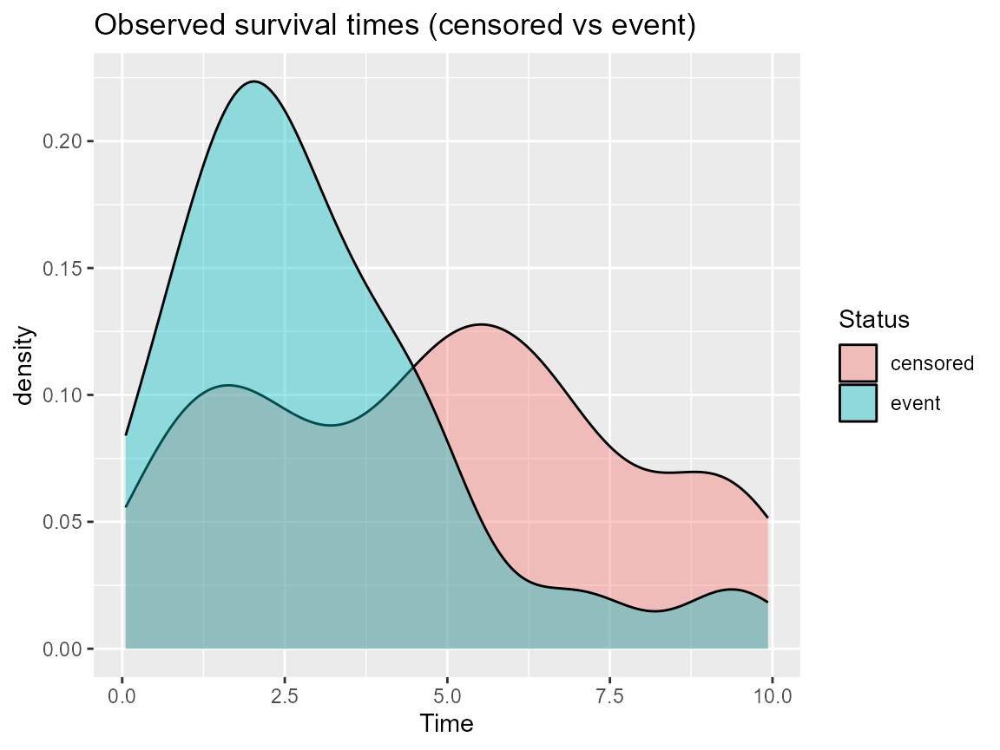

What you’ll learn: how to adapt DPmixGPD to survival-style data, what is currently available (bulk + GPD for tail times), and how to visualize survival curves even under right censoring.
Survival data format
Use a data frame with columns time, status
(1 for event, 0 for censor), and covariates. DPmixGPD currently treats
all outcomes as positive durations and uses the conventional density +
tail augmentation, so censoring is handled via manual likelihood
reweighting outside the package (future work may integrate censored
nodes inside Nimble).
Minimal survival example
data <- sim_survival_tail(n = 220, seed = 220)
y <- data$time
bundle <- build_nimble_bundle(
y = y,
backend = "sb",
kernel = "gamma",
GPD = TRUE,
J = 5,
mcmc = list(niter = 200, nburnin = 50, thin = 2, nchains = 2, seed = c(1, 2))
)
if (use_cached_fit) {
fit <- fit_small
} else {
fit <- run_mcmc_bundle_manual(bundle)
}Diagnostic: survival density
data.frame(time = y, status = factor(data$status, labels = c("censored", "event"))) |>
ggplot(aes(x = time, fill = status)) +
geom_density(alpha = 0.4) +
labs(title = "Observed survival times (censored vs event)", x = "Time", fill = "Status")
Prediction: survival curves via tail extrapolation
tau <- seq(0.01, 0.99, length.out = 40)
quantiles <- predict(fit, type = "quantile", p = tau)
surv_curve <- data.frame(time = as.numeric(quantiles$fit), survival = 1 - tau)
surv_curve
#> time survival
#> 1 -5.41564394 0.99000000
#> 2 -3.71701478 0.96487179
#> 3 -2.85927076 0.93974359
#> 4 -2.24485270 0.91461538
#> 5 -1.75114945 0.88948718
#> 6 -1.33058102 0.86435897
#> 7 -0.95954749 0.83923077
#> 8 -0.62453968 0.81410256
#> 9 -0.31692506 0.78897436
#> 10 -0.03066829 0.76384615
#> 11 0.23872282 0.73871795
#> 12 0.49473258 0.71358974
#> 13 0.74015955 0.68846154
#> 14 0.97733665 0.66333333
#> 15 1.20828647 0.63820513
#> 16 1.43482996 0.61307692
#> 17 1.65866560 0.58794872
#> 18 1.88143488 0.56282051
#> 19 2.10478604 0.53769231
#> 20 2.33044506 0.51256410
#> 21 2.56030238 0.48743590
#> 22 2.79652736 0.46230769
#> 23 3.04173071 0.43717949
#> 24 3.29921228 0.41205128
#> 25 3.57336662 0.38692308
#> 26 3.87039936 0.36179487
#> 27 4.19971236 0.33666667
#> 28 4.55603167 0.31153846
#> 29 4.95839585 0.28641026
#> 30 5.40960647 0.26128205
#> 31 5.87604536 0.23615385
#> 32 6.69726922 0.21102564
#> 33 7.57239759 0.18589744
#> 34 8.24049647 0.16076923
#> 35 9.07790046 0.13564103
#> 36 9.09604752 0.11051282
#> 37 9.11450250 0.08538462
#> 38 9.21132935 0.06025641
#> 39 9.41516662 0.03512821
#> 40 10.15470395 0.01000000We treat the quantiles as inverse survival: the higher the quantile, the lower the survival probability, which mirrors how extreme durations dominate upper tails. ## Roadmap and assumptions
- Overlap assumption: the model must see enough events (status = 1) to learn tail parameters; too few will make the GPD estimate unstable.
- Censoring note: handle censoring outside DPmixGPD by imputing truncated observations or reweighting the data before bundling.
-
Diagnostic tip: compare
predict(..., type = "quantile", p = c(.9, .99))with Kaplan-Meier estimates to monitor tail stability.
Session info
sessionInfo()
#> R version 4.5.2 (2025-10-31 ucrt)
#> Platform: x86_64-w64-mingw32/x64
#> Running under: Windows 11 x64 (build 26100)
#>
#> Matrix products: default
#> LAPACK version 3.12.1
#>
#> locale:
#> [1] LC_COLLATE=English_United States.utf8
#> [2] LC_CTYPE=English_United States.utf8
#> [3] LC_MONETARY=English_United States.utf8
#> [4] LC_NUMERIC=C
#> [5] LC_TIME=English_United States.utf8
#>
#> time zone: America/New_York
#> tzcode source: internal
#>
#> attached base packages:
#> [1] stats graphics grDevices datasets utils methods base
#>
#> other attached packages:
#> [1] dplyr_1.1.4 ggplot2_4.0.1 nimble_1.4.0 DPmixGPD_0.0.8
#>
#> loaded via a namespace (and not attached):
#> [1] sass_0.4.10 future_1.68.0 generics_0.1.4
#> [4] renv_1.1.5 lattice_0.22-7 listenv_0.10.0
#> [7] pracma_2.4.6 digest_0.6.39 magrittr_2.0.4
#> [10] evaluate_1.0.5 grid_4.5.2 RColorBrewer_1.1-3
#> [13] fastmap_1.2.0 jsonlite_2.0.0 scales_1.4.0
#> [16] codetools_0.2-20 numDeriv_2016.8-1.1 textshaping_1.0.4
#> [19] jquerylib_0.1.4 cli_3.6.5 rlang_1.1.6
#> [22] parallelly_1.46.0 future.apply_1.20.1 withr_3.0.2
#> [25] cachem_1.1.0 yaml_2.3.12 otel_0.2.0
#> [28] tools_4.5.2 parallel_4.5.2 coda_0.19-4.1
#> [31] globals_0.18.0 vctrs_0.6.5 R6_2.6.1
#> [34] lifecycle_1.0.4 fs_1.6.6 htmlwidgets_1.6.4
#> [37] ragg_1.5.0 pkgconfig_2.0.3 desc_1.4.3
#> [40] pillar_1.11.1 pkgdown_2.2.0 bslib_0.9.0
#> [43] gtable_0.3.6 glue_1.8.0 systemfonts_1.3.1
#> [46] tidyselect_1.2.1 tibble_3.3.0 xfun_0.55
#> [49] rstudioapi_0.17.1 knitr_1.51 farver_2.1.2
#> [52] htmltools_0.5.9 igraph_2.2.1 labeling_0.4.3
#> [55] rmarkdown_2.30 compiler_4.5.2 S7_0.2.1